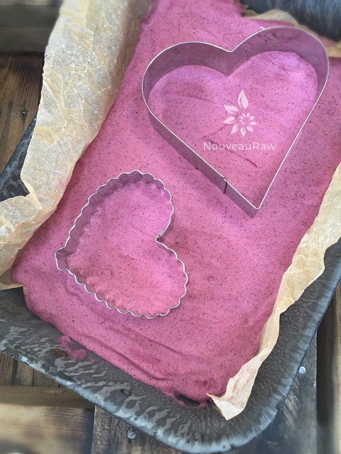
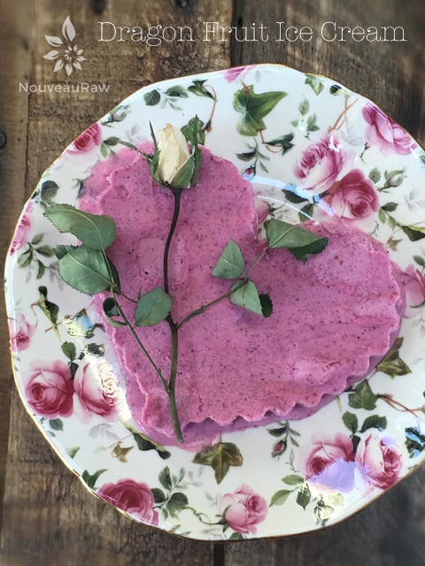
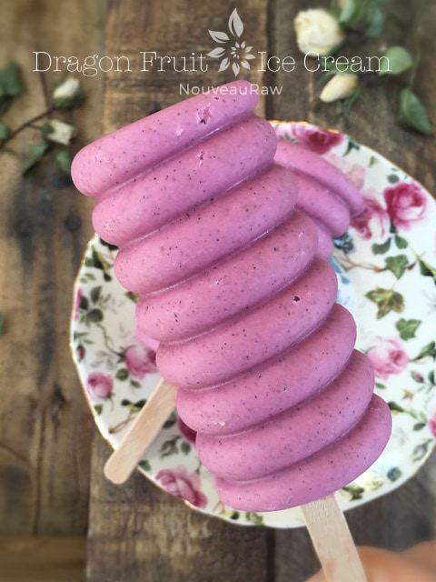

Dragon Fruit Ice Cream

~ raw, vegan, gluten-free, grain-free ~
Did you know that dragon fruit is actually a type of cactus? The fruit comes in 3 colors: 2 have pink skin, but with different colored flesh (one white, the other red), while another type is yellow with white flesh.
The cacti that the fruit grows on only blooms at night, under a full moon. How magical is that?! Dragon fruit is low in calories and offers numerous nutrients, including Vitamin C, phosphorus, calcium, plus fiber and antioxidants.
Dragon fruit has a unique flavor, all its own – sweet and crunchy, with a taste that’s like a cross between kiwi and pear.
How to choose a ripe dragon fruit:
Look for bright, even-colored skin. If the fruit has a lot of blotches, it may be over-ripe (a few are normal). Another sign of over-ripe dragon fruit is a very dry, brittle brown stem or brown on the tips of the “leaves.” Hold the dragon fruit in your palm and try pressing the skin with your thumb or fingers – it should give a little (like a ripe kiwi), but shouldn’t be too soft or mushy. If it’s very firm, it will need to ripen for a few days.
Bob actually picked this fruit up for me when he did a mad dash to Whole Foods to get some missing ingredients for one of my recipe creations. Neither one of us had ever experienced dragon fruit before, but it was well worth the adventure. They may be hard to come by where you live, or possibly too expensive… but I have found frozen dragon fruit at Safeway before, so always check out the freezer section of your local store if interested. I hope you enjoy this vibrant ice cream! Blessings, amie sue
yields 5 cups batter
- 2 cups raw cashews, soaked 2+ hours
- 1 3/4 cups thick young Thai coconut cream or canned
- 11 oz by weight, dragon fruit (1 medium)
- 3/4 cup maple syrup
- 1/2 cup raisins
- 2 Tbsp fresh lemon juice
- 1 Tbsp vanilla extract
- 1/4 tsp Himalayan pink salt
Preparation:
- Place the cashews in a glass bowl, along with 4 cups of water.
- Soak for at least 2 hours. Read more about why (here).
- The soaking process will help reduce phytic acid, which will aid in digestion.
- The soaking also softens the cashews, so they blend nice and creamy.
- After the cashews are through soaking, drain, and rinse.
- In a high-speed blender, combine the cashews, coconut cream, dragon fruit, sweetener, raisins, lemon juice, vanilla, and salt. Blend until nice and creamy.
- If the raisins are really hard and dry, I recommend rehydrating them in some warm water before adding them. Be sure to drain and hand-squeeze the excess water from them.
- I have used frozen and thawed dragon fruit with great success.
- Due to the volume and the creamy texture that we are going after, it is important to use a high-powered blender. It could be too taxing on a lower-end model.
- Blend until the filling is creamy smooth. You shouldn’t detect any grit. If you do, keep blending.
- This process can take 2-4 minutes, depending on the strength of the blender. Keep your hand cupped around the base of the blender carafe to feel for warmth. If the batter is getting too warm. Stop the machine and let it cool. Then proceed once cooled.
- Place the blender carafe in the fridge or freezer for 1 hour.
- If chilled in the fridge it can stay there for up to 8 hours. But don’t leave it in the freezer for more than an hour or it will freeze solid.
- Once chilled pour the batter into the ice cream maker and follow the manufacturer’s instructions.
- It is best to take the ice cream out of the freezer for about 10 minutes ahead of time, so it can have a chance to soften.
- Eat within 1 month.
Freezing Suggestions for Ice Cream:
-
Use an ice cream machine. Follow the manufactures directions.
-
Freeze in popsicle molds or 3 oz Dixie cups with a popsicle stick inserted.
-
-
Store the ice cream in the very back of the freezer, as far away from the door as possible. Every time you open your freezer door you let in warm air. Keeping ice cream way in the back and storing it beneath other frozen-sold items will help protect it from those steamy incursions.
-
Ice cream is full of fat, and even when frozen, fat has a way of soaking up flavors from the air around it—including those in your freezer. To keep your ice cream from taking on the odors, use a container with a tight-fitting lid. For extra security, place a layer of plastic wrap between your ice cream and the lid.
-
To soften in the refrigerator, transfer ice cream from the freezer to the refrigerator 20-30 minutes before using. Or let it stand at room temperature for 10-15 minutes.
-
Wish to make your own raw ice cream, wonder what machine I might recommend, and more? Click (
here) to check out the Reference Library!

This is just an idea, but sometimes I like to pour the ice cream batter into a shallow pan. After it is frozen, I use cookie cutters to plate fun shapes on plates.


And of course… as I do with all my ice cream batters, I like to make a few popsicles with the batter too.
© AmieSue.com